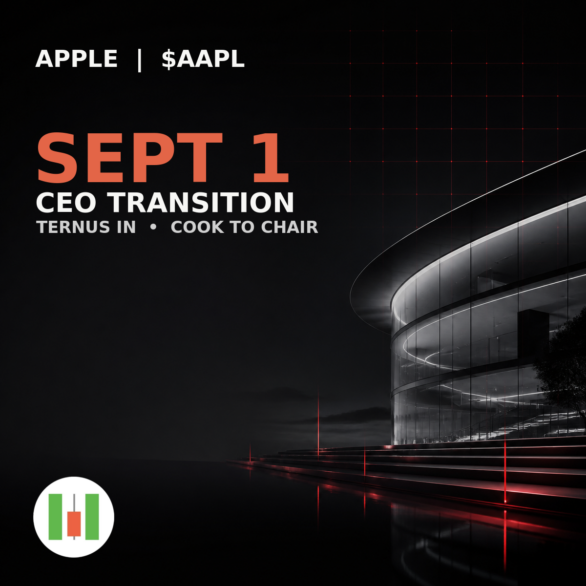

when2buy
内容运行面板
这是唯一的持续更新页面，不按运行新建页面。状态：PUBLISHED · 更新时间：2026-09-01T04:42:04.808197+00:00
最新采集原图
图片直接展示原始媒体 URL；点击可打开原图。每张图也会尝试下载到 GitHub Actions artifact。
JUST IN: Tom Lee’s BitMine bought 53,501 $ETH last week, bringing the total to 5.9 million Ethereum. https://t.co/wM2iMcghyK
原图：2 · 本地归档：2JUST IN: Call tracker MWX Alpha from @mwx_ai flagged $FONE at $253K MC on Aug 27 at 7:05 AM, 5 minutes after it bonded.. Since then, it has logged a cluster of 75 KOL calls. FONE later peaked at $37M MC on Aug 28 at 16:00, about 145x from the first tracked call. MWX Alpha tracks who called, at what market cap, plus smart wallet flow and CT narrative momentum. Full breakdown: https://t.co/BGtPmiyWmk
原图：2 · 本地归档：2JUST IN: 🇺🇸 Fed Chair Warsh says ‘Economic growth in the US appears to have strengthened.’ https://t.co/DoK4zvMyeP
原图：2 · 本地归档：2This is what the Linkedin of the new CEO of Apple $AAPL 🍏 looks like https://t.co/UiyGAd3LQZ
原图：1 · 本地归档：1JUST IN: PumpFun sends 132.94K $SOL ($13.74M) to Kraken, likely to sell - Onchain Lens. https://t.co/rl27wc4k1W
原图：2 · 本地归档：2JUST IN: 🇺🇸 Hyperliquid in talks with Kraken parent Payward about a potential U.S. market entry. https://t.co/TJgRvJQVNY
原图：2 · 本地归档：2JUST IN: CK Zheng, former Credit Suisse global head of valuation risk, says Bitcoin’s worst may be over and expects it to reach $150,000 by late 2027. https://t.co/12DvibVXIV
原图：2 · 本地归档：2JUST IN: Bitwise’s $XRP ETF has surpassed $500,000,000 in assets under management just nine months after launch. https://t.co/uI0P5Algns
原图：2 · 本地归档：2when2buy 成图
